A Lead pipeline is a tool that shows how many leads are currently at each qualification stage, who is responsible for them, and what tasks are associated with them.
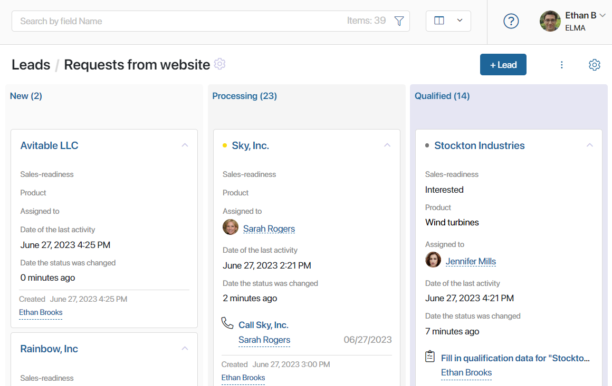
On the pipeline page, leads are displayed as a Kanban board. Each column represents a certain lead status. When the lead status changes, the item moves accordingly on the Kanban board.
By default, the lead processing has three stages. New leads are added to the New column, then it is moved to the Processing column. If the lead is ready to turn into a deal, it is moved into the Qualified column, otherwise, it is added to the Unqualified column.
If needed, you can configure the pipeline to process leads in the way that fits your company’s sales process: change the number of stages, edit their names, and add activities that are performed when the lead status changes.
начало внимание
Only the users included in the Administrators group can configure, add, and remove pipelines.
конец внимание
Add a new lead pipeline
The Leads app has one default pipeline where all new leads are added. For lead categorization, you can create additional custom pipelines.
To create a custom lead pipeline, click the + icon next to the name of the last pipeline. Enter a name for the new pipeline and configure its stages.
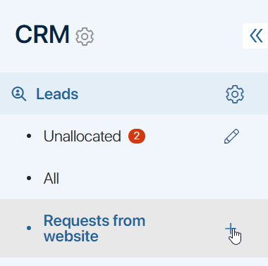
If you’ve added several pipelines, you can change their order. To do that, click the pencil icon next to the Unallocated page name. Then rearrange the pipelines using drag-and-drop.
Set up lead stages
To set up lead processing stages:
- Open the page of the corresponding pipeline. Make sure the Kanban board view is selected.
- Click the gear icon in the top right corner of the page. Select Pipeline Settings.
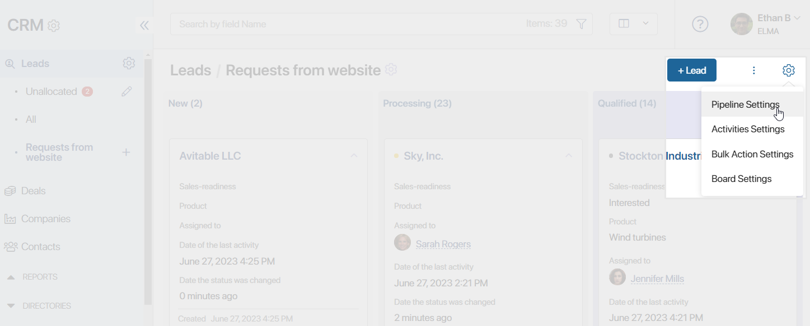
- Sales rep changes lead status manually. This option allows sales reps to manually move leads from one stage to another.
- Leads progress only forward. Forbid moving leads back to the previous stages.
- Leads progress according to a business process. Leads will automatically move from one stage to another within a business process. You can select an existing process or add a new one. Please note that this option will only work correctly if you add Manage Status activities to the process and select the statuses of the current pipeline.
- Change the stages settings. You can:
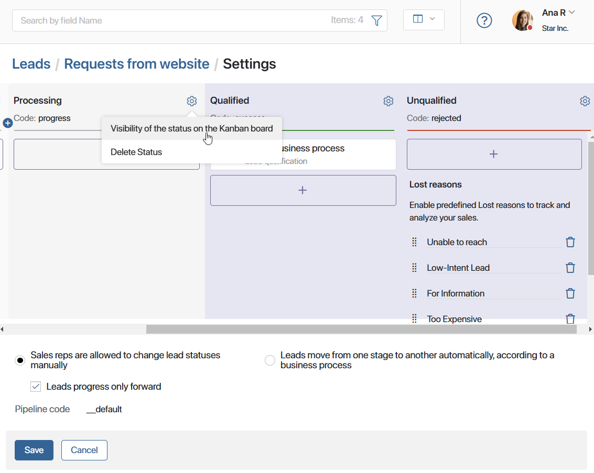
- Edit the name of the stages by clicking on them.
- Rearrange the stages using drag-and-drop.
- Delete a stage by clicking the recycle bin icon.
- Add the new stage by clicking the
 icon.
icon. - Configure actions that will be performed when a lead status changes.
- Specify users who will see the stage on the pipeline page. Configure this with the Visibility of the status on the Kanban board option.
- Exclude a stage by clicking the gear icon next to its name and selecting Delete Status. The first and final stages cannot be deleted.
Add actions to pipeline stages
Add actions that will be automatically performed when the lead is moved from one stage to another. To do that, click the 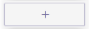 button under a column name.
In the opened window, select an action:
- Start a business process. This setting allows you to select a business process that starts when a lead is moved from one stage to another. For example, you can design a business process for lead processing that will be automatically launched when a lead is moved from New to Processing stage.
- Email. This activity allows you to send emails. For example, you can use it to automatically send a commercial proposal to a potential client. This activity is configured in the same way as the Email Notification activity. If an error occurs while sending the notification, for example, if the recipient’s address is not found, the employee who changed the lead status will receive the corresponding notification.
- Webhook. You can invoke an external system using a webhook. By selecting this action, you will be able to transfer data from BRIX to an external system. If the external system returns an error when sending the request, the employee who changed the lead status will receive a corresponding notification.
- SMS. This activity is used to notify customers and employees via SMS about any events. For example, you can configure an automatic notification about actual marketing activities performed by your company. Before configuring this activity, set up an integration with an SMS provider. Read more about this in the Send Message article. If an error occurs while sending the message, for example, if the external provider cannot be accessed, the employee who changed the lead status will receive the corresponding notification.
- Change values. This setting allows you to automatically change the value of any field on the lead page when the lead status changes.
For example, let’s say a lead has the Sales-readiness attribute. Its value can be Yes or No. By using the Change values action, you can automatically set the desired value for the attribute when the lead moves to the next stage.
To configure this action, in the left column, select the field that you want to change. In the right column, specify the value to be assigned to this field.
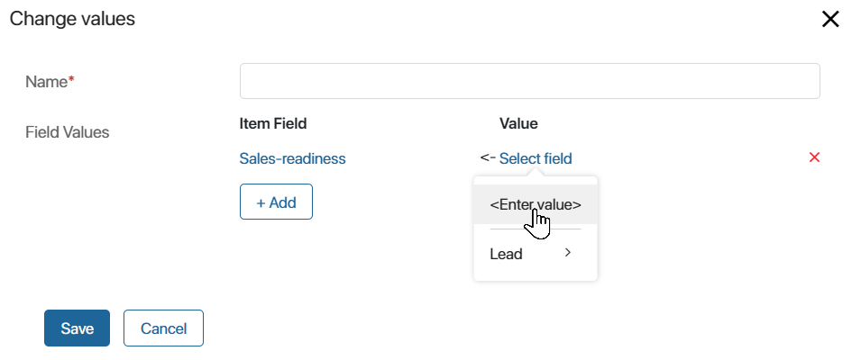
You can select several actions within one stage in a pipeline. In that case, they will be performed in the order they were added.
Final stages of a pipeline
By default, each lead pipeline has two final stages: Qualified and Unqualified. They cannot be deleted.
The Qualified stage has an associated lead qualification business process. When the lead reaches this stage, the employee who changed the lead status receives the Fill in qualification data task. The employee can create a deal and a company or only a company if the deal is postponed. Read more about lead qualification in the Manage statuses. Lead qualification article.
If a potential client is no longer interested in buying, the employee can change the lead status to Unqualified, specifying the reason for rejection. You can add custom reasons for rejection to the default list. To do that, in the Pipeline Settings, click + Add reason in the Unqualified final stage column. To delete a reason, click the recycle bin icon next to its name.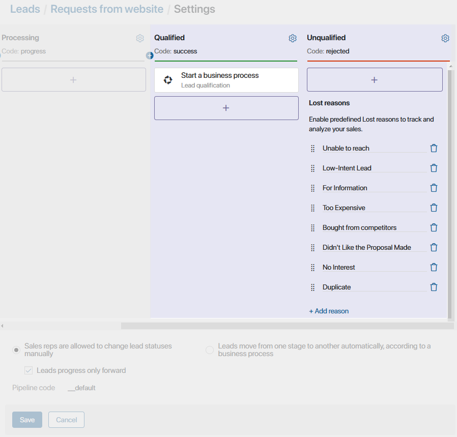
By default, leads with the Unqualified status are hidden from the lead pipeline page. You can configure the visibility of the stage and show deals with this status.
Configure the visibility of stages on the Kanban board
You can configure different display of the Kanban board on the funnel page for different users. For example, only the manager sees all the New stage on the board as they assign leads to managers. By hiding statuses, employees see only the columns they are working with.
At the same time, leads with hidden statuses will be displayed for all users if you select the table view.
By default, the Unqualified status is hidden. The remaining stages are displayed for all users.
To set the visibility of a lead stage:
- Click the gear icon to the right of the status name and select the Visibility of the status on the Kanban board option.
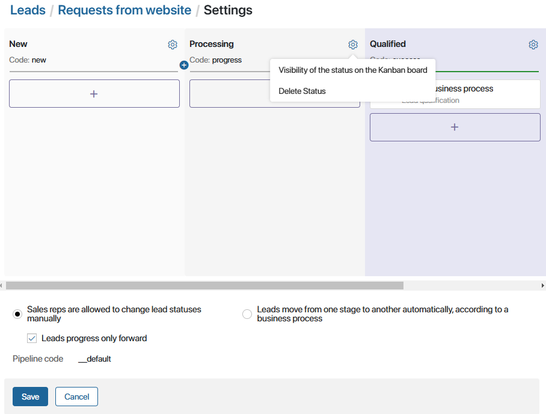 - In the window that opens, specify who should see the lead status on the Kanban board to. You can select:
- User.
- User group.
- Org chart item.
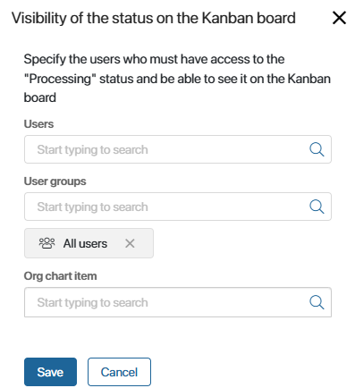
Configure the lead qualification process
The Lead qualification business process automatically starts when a lead is assigned the Qualified status, which is a system process. It cannot be modified. However, you can make a copy of the process and configure this copy according to your company’s requirements.
To do this:
- Go to Administration > Business processes and select the Lead qualification process from the list.
- Click on the three dots icon to the right of the process name and select Create Copy.
- In the Parent category field of the opened window, select the workspace where the business process will be saved.
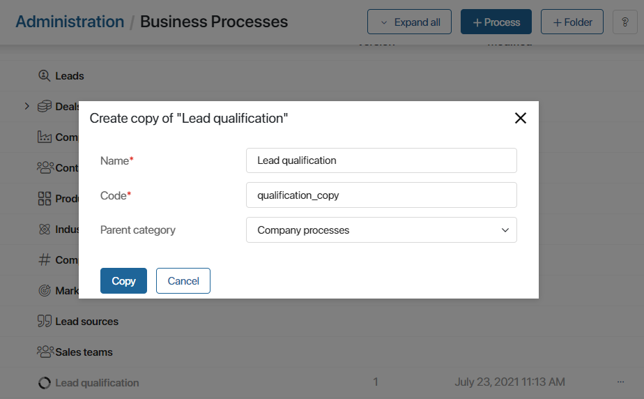
- Find the copy of the process in the list and edit it according to your needs.
The process can be associated with the Qualified stage of a pipeline. Read more in the Add actions to pipeline stages section.
Configure the visibility of a pipeline and its items
You can limit the visibility of each pipeline in the left menu, as well as configure access to its items.
For example, if your company has several sales teams, create groups and assign users to them. Then configure the settings so that the group sees only the pipeline it is working with, and the users have access to certain leads.
Access to items is restricted in the Leads app settings.
To configure the visibility of a pipeline, click the pencil icon next to the name of the Unallocated page. Then click on the gear icon that appears next to the desired pipeline and specify the user groups and roles that can see it.
Read more about pipeline visibility in the Access settings for CRM apps article.
Delete a pipeline
The All and Unallocated page, as well as the pipeline added by default, cannot be removed from the list. However, you can remove custom pipelines. To do so:
- In the Leads app, open the pipeline you want to delete. If there are items in it, move them to another pipeline. Read more in Move a lead to another pipeline.
- Next to the Unallocated page name, click the pencil icon.
- Next to the pipeline you want to delete, click the recycle bin icon and confirm deletion.
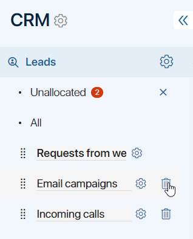
Found a typo? Select it and press Ctrl+Enter to send us feedback